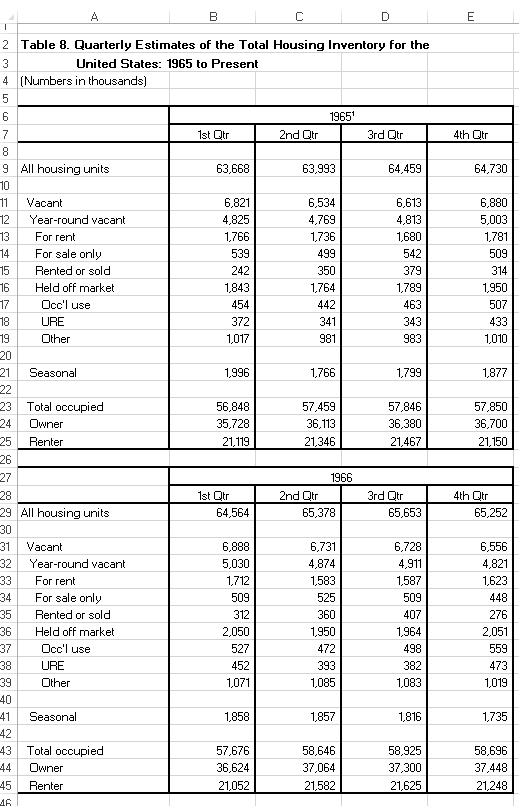

LET’S WRANGLE SOME HOUSING DATA.
We’ll try something different with how posts are organized. In the past I have generally mixed data wrangling, R code and graphs all in one post. Now I’m going to break it up. Posts like yesterday will just show some data and discuss it. Then, if the data wrangling or code is complicated enough I’ll follow up with another post with details.
You’ll be able to find all my posts on data wrangling, under the data wrangling tag and R code under the R tag. If you are interested in economic trends or housing, just search for the topic on my topics page. Sometimes, especially for the older posts, things will be mixed up. But I’ll try to keep it better organized going forward.
A (Tidyquant)um of solace
In yesterday’s post we reviewed some trends in housing vacancies. In this post I want to write about the data wrangling for that post. Turns out some cool tools make this a bit shorter than it was originally going to be. That’s a good thing. Let me tell you about it.
Yesterday we were looking at U.S. housing inventory using data from the U.S. Census Bureau’s Housing Vacancy Survey (HVS). You can get the HVS data from the Census webpage, but it’s kind of a mess.
It sure is nice when there’s a cool new tool that helps you get the job done.
Turns out the tidyquant package was super-helpful here. Description of the package straight from CRAN:
Bringing financial analysis to the ‘tidyverse’. The ‘tidyquant’ package provides a convenient wrapper to various ‘xts’, ‘zoo’, ‘quantmod’, ‘TTR’ and ‘PerformanceAnalytics’ package functions and returns the objects in the tidy ‘tibble’ format. The main advantage is being able to use quantitative functions with the ‘tidyverse’ functions including ‘purrr’, ‘dplyr’, ‘tidyr’, ‘ggplot2’, ‘lubridate’, etc. See the ‘tidyquant’ website for more information, documentation and examples.
Well I like tidy data and I like several of the package functions listed, so this sounded like a winner to me. Indeed it was, but let’s back up a second.
Some very untidy data
If you just go to the Census HVS main page you can find a list of historical tables that are stored in .xlsx spreadsheets.
We were interested in several of those tables yesterday, but the main one was Table 8: Table 8. Quarterly Estimates of the Housing Inventory: 1965 to Present .xlsx. If you open that spreadsheet up you’d see something like this:

This is set up just like spreadsheets tend to be. It’s got merged cells, data skips rows and all the usual things that make our lives more challenging.
FRED to the rescue
Fortunately, the HVS data is available via the Saint Louis Federal Reserve’s FRED database. And if you followed my post from back in April you know what we can do if we combine FRED with the quantmod package.
In the example from April we only grabbed a couple of series. But what if we want a bunch of data? We could of course, copy and paste, or loop, or even better use a vector maybe purrr::map. But wouldn’t it be nice if there was some tool to easily tidy a bunch of data?
Yes, and there totally is such a tool. The tidyquant package does exactly what we need.
Using tidyquant
After we install the tidyquant package install.packages("tidyquant") we are almost ready to go. The next thing we’ll need is a list of the FRED mnemonics for the variables of interest.
After loading the libraries we have 3 steps:
- Prepare for data
- Pull data
- Organize data
Prepare for data
In the first step, we create a variable tickers that stores a list of FRED mnemonics for the variables we want. Then we prepare a list of variable names. Finally we create a lookup table matching mnemonics with variable names.
#####################################################################################
## Step 0: Load Libraries ##
#####################################################################################
library(tidyverse)
library(tidyquant)
#####################################################################################
## Step 1: Prepare for data ##
#####################################################################################
# Get HVS data
# First, list the Mnemonics from FRED
tickers <- c('ETOTALUSQ176N', # All housing units
'EVACANTUSQ176N', # Vacant
'EYRVACUSQ176N', # Year-round vacant
'ERENTUSQ176N', # Vacant for rent
'ESALEUSQ176N', # Vacant for sale
'ERNTSLDUSQ176N', # Vacant rented or sold
'EOFFMARUSQ176N', # Vacant held off market
'EOCCUSEUSQ176N', # Vacant occasional use
'EUREUSQ176N', # Vacant usual residence elsewhere
'EOTHUSQ176N', # Vacant other
'ESEASONUSQ176N', # Vacant seasonal
'EOCCUSQ176N', # Occupied
'EOWNOCCUSQ176N', # Owner occupied
'ERNTOCCUSQ176N', # Renter occupied
'RRVRUSQ156N', # Rental vacancy rate
'RHVRUSQ156N' # Homeowner vacancy rate
)
# Next, list human readable variable names
myvars <- c('All housing units',
'Vacant',
'Year-round vacant',
'Vacant for rent',
'Vacant for sale',
'Vacant rented or sold',
'Vacant held off market',
'Vacant occasional use',
'Vacant usual residence elsewhere',
'Vacant other',
'Vacant seasonal',
'Occupied',
'Owner occupied',
'Renter occupied',
'Rental vacancy rate',
'Homeowner vacancy rate'
)
# Create a lookup dataset
mylookup<-data.frame(symbol=tickers,var=myvars)
knitr::kable(mylookup)| symbol | var |
|---|---|
| ETOTALUSQ176N | All housing units |
| EVACANTUSQ176N | Vacant |
| EYRVACUSQ176N | Year-round vacant |
| ERENTUSQ176N | Vacant for rent |
| ESALEUSQ176N | Vacant for sale |
| ERNTSLDUSQ176N | Vacant rented or sold |
| EOFFMARUSQ176N | Vacant held off market |
| EOCCUSEUSQ176N | Vacant occasional use |
| EUREUSQ176N | Vacant usual residence elsewhere |
| EOTHUSQ176N | Vacant other |
| ESEASONUSQ176N | Vacant seasonal |
| EOCCUSQ176N | Occupied |
| EOWNOCCUSQ176N | Owner occupied |
| ERNTOCCUSQ176N | Renter occupied |
| RRVRUSQ156N | Rental vacancy rate |
| RHVRUSQ156N | Homeowner vacancy rate |
Pull data
This is super simple thanks to tidyquant. We simple have to feed the tq_get() function our list of mnemonics and tell it to read from FRED. We do this by setting get='economic data' in the function call.
#####################################################################################
## Step 2: Pull data ##
#####################################################################################
tickers %>% tq_get(get="economic.data",
from="2001-04-01" # we start from April 2001 due to break in HVS
) -> df
# Take a look:
knitr::kable(head(df))| symbol | date | price |
|---|---|---|
| ETOTALUSQ176N | 2001-04-01 | 117786 |
| ETOTALUSQ176N | 2001-07-01 | 118216 |
| ETOTALUSQ176N | 2001-10-01 | 118635 |
| ETOTALUSQ176N | 2002-01-01 | 119061 |
| ETOTALUSQ176N | 2002-04-01 | 119483 |
| ETOTALUSQ176N | 2002-07-01 | 119909 |
Nice.
Organize the data
Finally, we do a little bit of additional processing. Because tidyquant focuses on financial data, the default variable name is price. We’ll change the name to a more generic one value and create a variable called share that is the ratio of each variable to total housing units.
#####################################################################################
## Step 3: Organize data ##
#####################################################################################
df<-merge(df,mylookup,by="symbol") %>% rename(value=price)
df %>% group_by(date) %>%
# create a share variable that is the ratio of units to All housing units
mutate(share=value/value[var=="All housing units"]) %>%
ungroup() %>% arrange(date,-value) -> df
knitr::kable(tail(df,16))| symbol | date | value | var | share |
|---|---|---|---|---|
| ETOTALUSQ176N | 2017-04-01 | 136456.0 | All housing units | 1.0000000 |
| EOCCUSQ176N | 2017-04-01 | 118899.0 | Occupied | 0.8713358 |
| EOWNOCCUSQ176N | 2017-04-01 | 75716.0 | Owner occupied | 0.5548748 |
| ERNTOCCUSQ176N | 2017-04-01 | 43183.0 | Renter occupied | 0.3164610 |
| EVACANTUSQ176N | 2017-04-01 | 17557.0 | Vacant | 0.1286642 |
| EYRVACUSQ176N | 2017-04-01 | 13383.0 | Year-round vacant | 0.0980756 |
| EOFFMARUSQ176N | 2017-04-01 | 7450.0 | Vacant held off market | 0.0545964 |
| ESEASONUSQ176N | 2017-04-01 | 4175.0 | Vacant seasonal | 0.0305959 |
| EOTHUSQ176N | 2017-04-01 | 3847.0 | Vacant other | 0.0281922 |
| ERENTUSQ176N | 2017-04-01 | 3470.0 | Vacant for rent | 0.0254294 |
| EOCCUSEUSQ176N | 2017-04-01 | 2214.0 | Vacant occasional use | 0.0162250 |
| EUREUSQ176N | 2017-04-01 | 1388.0 | Vacant usual residence elsewhere | 0.0101718 |
| ERNTSLDUSQ176N | 2017-04-01 | 1262.0 | Vacant rented or sold | 0.0092484 |
| ESALEUSQ176N | 2017-04-01 | 1201.0 | Vacant for sale | 0.0088014 |
| RRVRUSQ156N | 2017-04-01 | 7.3 | Rental vacancy rate | 0.0000535 |
| RHVRUSQ156N | 2017-04-01 | 1.5 | Homeowner vacancy rate | 0.0000110 |
Now that we have our variables it’s easy to make plots or proceed with other analysis. Below, I’m going to share the code I used for my small multiple plots.
Recently, I’ve liked to plot small multiples of a time series. But I also like to include all the time series on each plot, with the other series as a faint gray line. I think this kind of graph helps make comparisons easier, particularly if a panel plot goes over several rows/columns.
Here’s how I made it:
# Make a caption:
mycaption<- "@lenkiefer Source: U.S. Bureau of the Census, Housing Inventory Estimate, retrieved from FRED, Federal Reserve Bank of St. Louis; https://fred.stlouisfed.org/series/EOFFMARUSQ176N, September 18, 2017."
# Wrap caption 90 characters:
mycaption <- paste0(strwrap(mycaption, 90), sep="", collapse="\n")
# Make plot
ggplot(data=
# We're only going to plot 3 series
filter(df,var %in% c('Vacant for rent',
"Vacant rented or sold",
'Vacant for sale',
'Vacant held off market')),
aes(x=date,y=share,label=var))+
# Plot the gray lines
geom_path(data=filter(df,var %in% c('Vacant for rent',
"Vacant rented or sold",
'Vacant for sale',
'Vacant held off market')) %>%
#overwrite the var variable with NULL so each line shows up on each panel.
mutate(var=NULL),
inherit.aes=F,color="darkgray", # tell this plot to ignore the aes statement
alpha=0.5, # make the lines faint
aes(x=date,y=share,group=symbol))+
geom_line(size=1.05,color="royalblue")+ # draw the real plot
# guides(color=F)+ # ditch
theme_minimal()+
facet_wrap(~var)+
scale_y_continuous(labels=scales::percent,breaks=seq(0,1,.01))+
theme(plot.caption=element_text(hjust=0),
strip.text=element_text(color="royalblue") )+
labs(x="",y="",title="U.S. Housing Inventory: Year-round vacant units as share of total housing stock", caption=mycaption)
Data wrangling got you down? Take solace in great new tools.
Sometimes data wrangling can be a real bummer. But folks are constantly making new tools that make it easier. Tidyquant is one such tool. We only scratched the surface of what it can do, but it has already made our live a little easier and more tidy. How could it work for you?